Nas duas primeiras aulas você construiu um chatbot com regras, você definiu exatamente o que ele podia responder. Isso tem valor: é rápido, previsível e não custa nada. Mas tem um limite claro: o bot só sabe o que você ensinou.
A partir de agora, o processamento deixa de ser só código no python e passa a envolver a Inteligência Artificial. Mas tem um detalhe importante: essa inteligência não roda dentro do seu computador. Você ainda controla o comportamento, mas quem responde é o GPT.
Assim como no exemplo da Alexa que vimos, onde ela busca informações externas, o GPT também está fora do seu código, rodando em servidores da OpenAI. Isso significa que, para o seu programa conversar com o GPT, ele precisa enviar uma mensagem pela internet e esperar uma resposta. Esse processo tem um nome: requisição.
Toda vez que você envia uma mensagem para o GPT, ele precisa ler o texto, entender e gerar uma resposta. Para fazer isso, ele não trabalha com palavras completas, mas sim com pequenos pedaços de texto chamados tokens. Um token pode ser uma palavra, parte de uma palavra ou até um símbolo. Por exemplo: "Olá" → pode ser 1 token, frases maiores → viram vários tokens.
Regra simples para você guardar:
👉 1 token ≈ 3 a 4 caracteres (em média)
Cada requisição que o seu chatbot faz usa tokens:
-> tokens da sua pergunta
-> tokens da resposta do GPT
Como esse processamento acontece fora do seu computador, nos servidores da OpenAI, ele tem custo.
Para o seu programa conseguir fazer essa requisição pela internet, existe uma “porta de entrada” oficial da OpenAI, essa porta é chamada de API.
E aqui entra um ponto essencial: a OpenAI precisa saber quem está fazendo essa requisição. É por isso que existe a chave de API. A chave funciona como uma identificação única sua.
Agora, para prosseguirmos, você precisa de uma chave de API, e isso terá um custo, infelizmente para seguir com os testes, precisaremos disso. É essa chave que autoriza o seu programa a usar o GPT, pense nela como uma senha de acesso ao serviço da OpenAI. Cada chamada que o seu chatbot faz consome tokens, e tokens custam dinheiro. Por isso a chave precisa ser sua, e precisa ficar protegida.
Para criar sua chave acesse platform.openai.com, faça login.
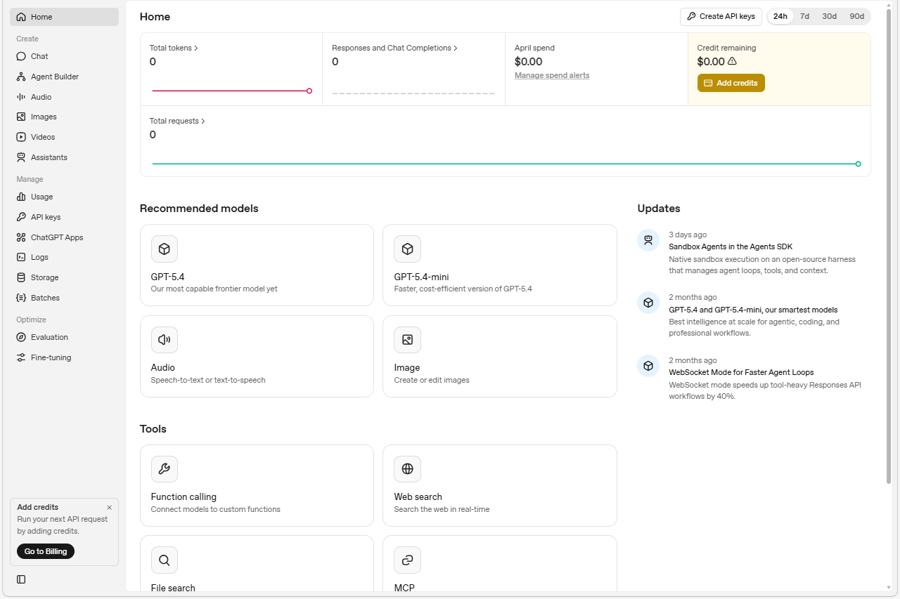
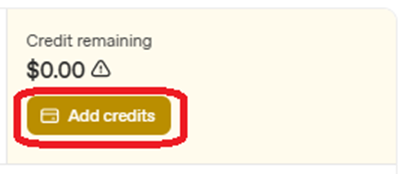
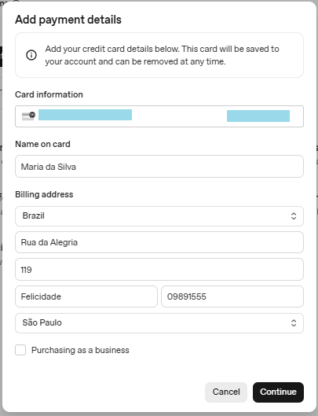
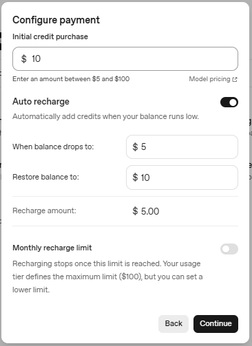
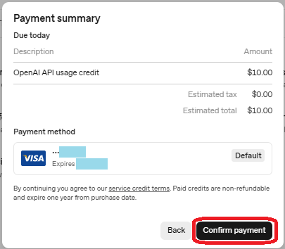
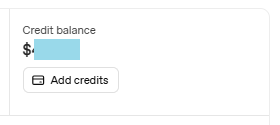
Com os créditos adquiridos, vamos criar nossa chave, na página https://platform.openai.com/home, vamos clicar em API Keys e clique em Create new secret key.
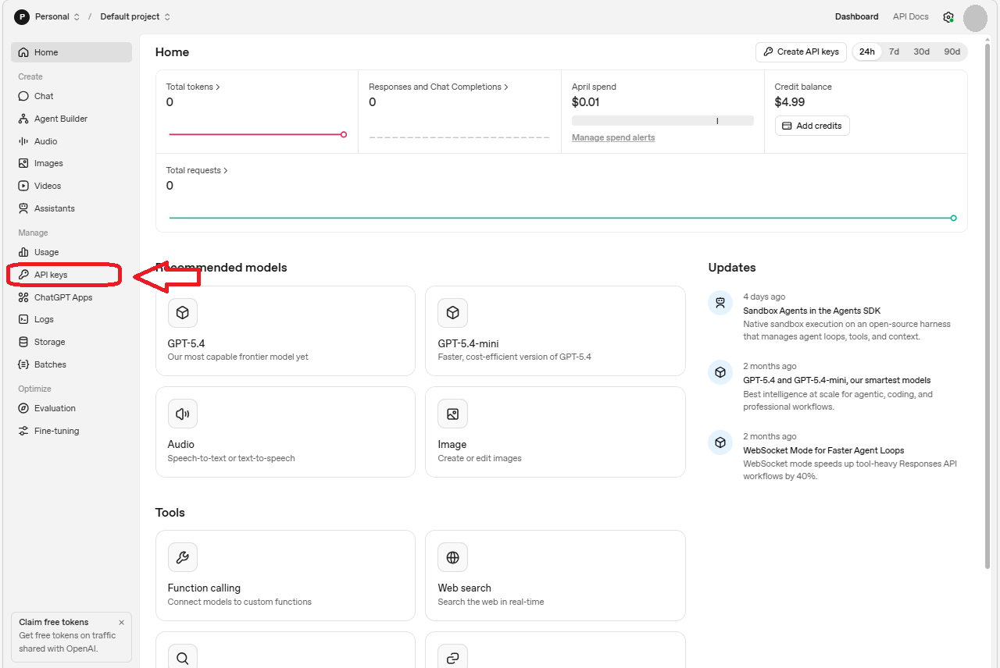
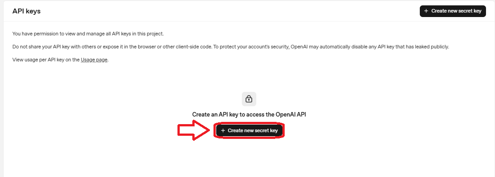
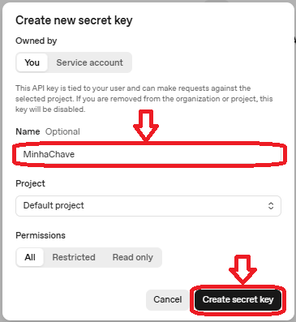
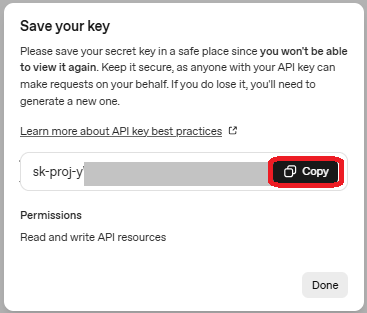
Nesse momento é importante salvar a chave em algum lugar onde ninguém vá acessar, mas que você não vá esquecer. Caso você esqueça essa chave, precisará apagá-la e criar outra, pois o site não fornecerá ela novamente.
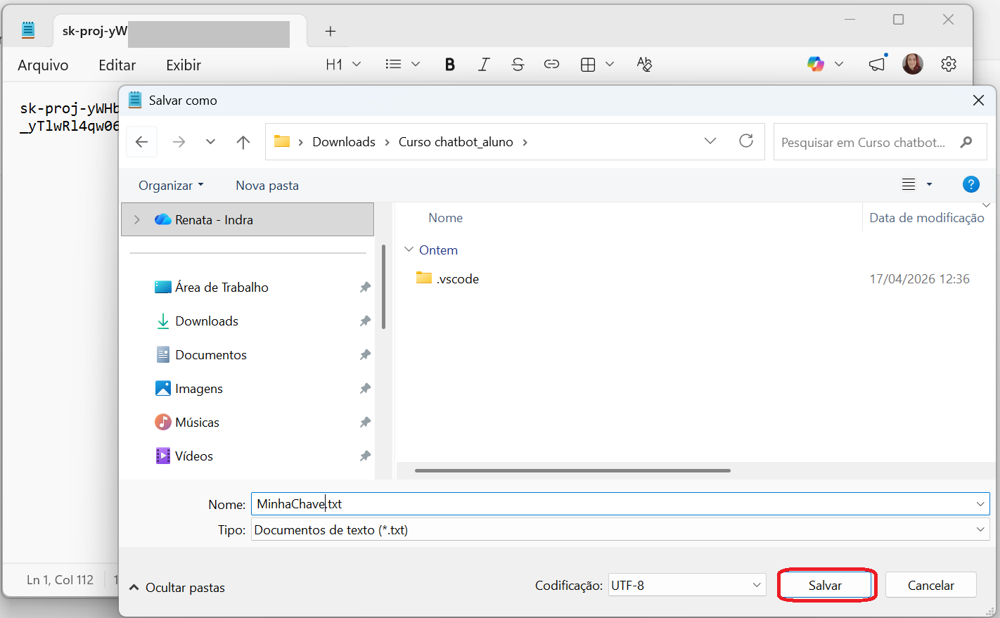
Não esqueça, a chave só aparece uma vez. Guarde em algum lugar seguro antes de fechar a tela.
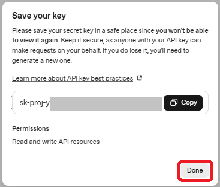
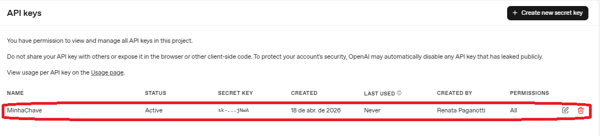
.env, e é exatamente isso que vamos fazer.
Crie um arquivo chamado .env na mesma pasta do seu projeto Python. Dentro dele, uma única linha:
OPENAI_API_KEY=sua-chave-aqui
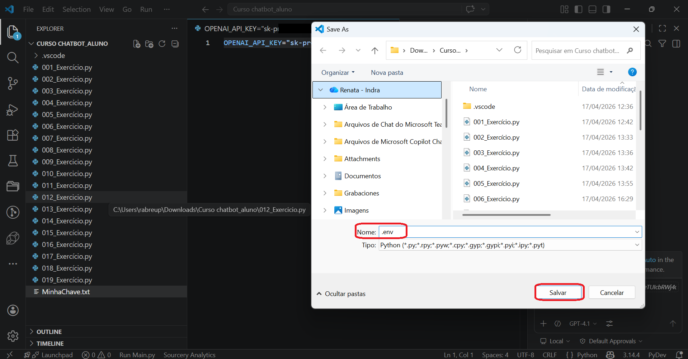
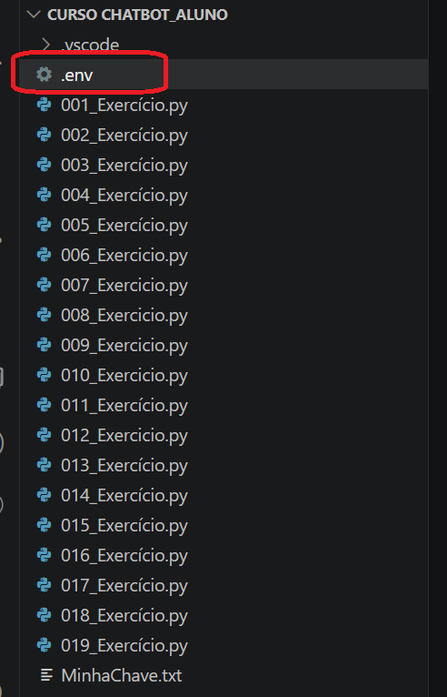
Agora instale as bibliotecas necessárias. Abra o terminal do VSCode, menu Terminal → New Terminal, e rode:
pip install openai python-dotenv
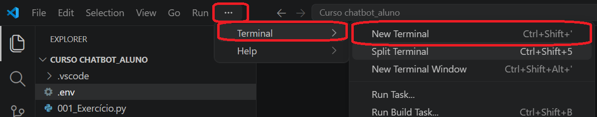
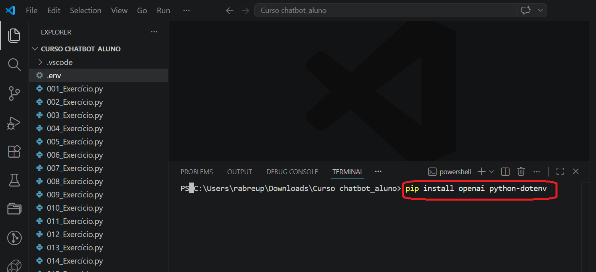
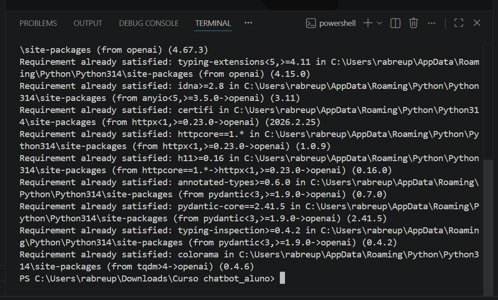
Com isso instalado, o Python consegue se conectar à API da OpenAI e ler o arquivo .env para pegar a chave sem que você precise escrevê-la no código. Vamos ao primeiro chatbot com IA?
import os import httpx from dotenv import load_dotenv from openai import OpenAI load_dotenv() client = OpenAI( api_key=os.getenv("OPENAI_API_KEY"), http_client=httpx.Client(verify=False) ) print("Chatbot iniciado. Digite 'sair' para encerrar.") while True: pergunta = input("Você: ").strip() if pergunta.lower() == "sair": break if not pergunta: continue resposta = client.chat.completions.create( model="gpt-4o-mini", messages=[{"role": "user", "content": pergunta}] ) print(f"Chatbot: {resposta.choices[0].message.content}")
| import os | Biblioteca padrão do Python para acessar o sistema operacional. Aqui usamos para ler variáveis de ambiente, informações guardadas fora do código, como a chave da API. |
| from dotenv import load_dotenv | Carrega o arquivo .env na memória. Depois de chamar load_dotenv(), tudo que estava no .env fica disponível como variável de ambiente para o Python ler com os.getenv(). |
| client = OpenAI(...) | Cria a conexão com a API da OpenAI. O client é o objeto que representa essa conexão, é através dele que todas as chamadas ao GPT são feitas. A api_key é lida do .env, nunca escrita diretamente aqui. |
| os.getenv("OPENAI_API_KEY") | Lê a chave do arquivo .env. O nome entre aspas precisa ser exatamente igual ao que você escreveu no .env. Se não encontrar, retorna None, e a conexão falha. |
| client.chat.completions.create(...) | Faz a chamada para o GPT. Você passa o modelo que quer usar e a lista de mensagens. O GPT processa e devolve uma resposta. É aqui que o token é consumido. |
| model="gpt-4o-mini" | Define qual modelo do GPT será usado. O gpt-4o-mini é rápido, barato e suficiente para aprendizado e projetos iniciais. Mas a família de modelos da OpenAI é mais ampla do que parece, e vale entender a lógica por trás disso. |
| messages=[{"role": "user", ...}] | A lista de mensagens enviada ao GPT. Cada mensagem tem um role, quem fala, e um content, o que foi dito. Por ora só estamos enviando a pergunta do usuário, sem contexto de conversa anterior. |
| resposta.choices[0].message.content | Extrai o texto da resposta. A API retorna um objeto estruturado, o texto em si está dentro de choices[0].message.content. O [0] pega a primeira (e única) opção de resposta gerada. |
| if not pergunta: continue | Ignora entradas vazias. Se o usuário apertar Enter sem digitar nada, o strip() retorna uma string vazia, que é "falsa" em Python. O continue pula para a próxima iteração sem chamar a API. |
Uma coisa que vale entender agora é a lógica por trás dos modelos disponíveis. A OpenAI organiza os modelos em famílias, e a escolha certa depende do equilíbrio entre qualidade, velocidade e custo que o seu projeto precisa.
A família GPT-4.1 é uma ótima escolha para chatbots. O gpt-4.1 é forte em seguir instruções e usar ferramentas externas. O gpt-4.1-mini é a versão mais rápida e mais barata, mantendo boa qualidade, e é o que nós usaremos nos exercícios daqui para frente. Existe também o gpt-4.1-nano, pensado para tarefas simples em alto volume.
A família mais recente é a GPT-5.4, lançada em 2026 e atual linha principal da OpenAI. O gpt-5.4 é o modelo flagship, com raciocínio avançado e janela de contexto de 1 milhão de tokens. O gpt-5.4-mini traz boa parte dessas capacidades num formato mais rápido e econômico. Para um chatbot de atendimento ou assistente direto, tanto a família 4.1 quanto o gpt-5.4-mini resolvem muito bem.
Execute e teste. Você vai perceber que o bot responde qualquer coisa, perguntas de matemática, receitas, histórias. Ele é o GPT sem restrição nenhuma. Mas tem um problema: pergunte algo que depende do que você disse antes. Algo como "qual foi minha última pergunta?", ele não vai saber. Cada mensagem é enviada do zero, sem histórico.
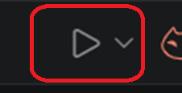
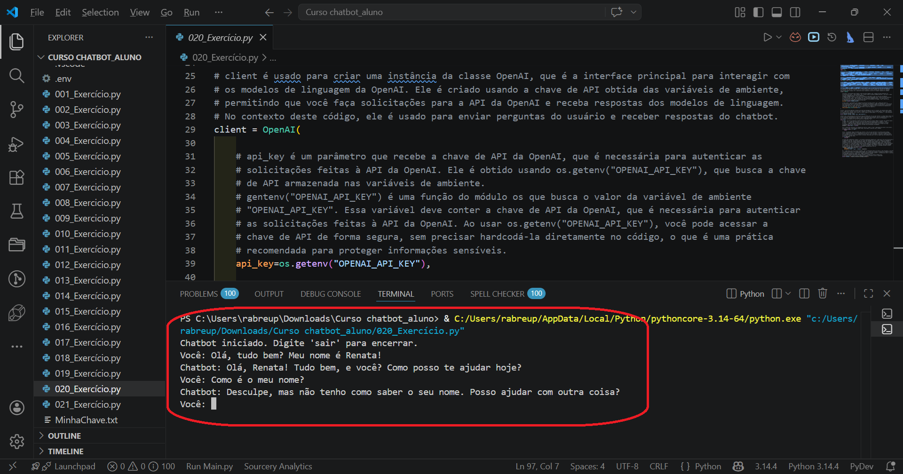
O GPT em si não guarda nada entre chamadas, cada requisição é independente. A memória precisa ser construída pelo seu código: você vai acumulando as mensagens numa lista e enviando o histórico completo a cada chamada. É exatamente isso que vamos fazer agora.
Faremos 2 mudanças significativas agora, criar a lista da suposta "memória" do chat e a segunda mudança importante é o system prompt, uma mensagem especial que você manda antes de qualquer pergunta do usuário, com instruções de comportamento para o GPT. É ali que você define quem ele é, o que pode responder e como deve se comunicar. Sem isso, o bot é genérico demais para servir num contexto real.
import os import httpx from dotenv import load_dotenv from openai import OpenAI load_dotenv() client = OpenAI( api_key=os.getenv("OPENAI_API_KEY"), http_client=httpx.Client(verify=False) ) mensagens = [ { "role": "system", "content": "Você é um assistente claro, direto e didático. Responda sempre em português." } ] print("Chatbot iniciado. Digite 'sair' para encerrar.") while True: pergunta = input("Você: ").strip() if pergunta.lower() == "sair": print("Bot: Até mais!") break if not pergunta: continue mensagens.append({"role": "user", "content": pergunta}) resposta = client.chat.completions.create( model="gpt-4o-mini", messages=mensagens ) resposta_texto = resposta.choices[0].message.content mensagens.append({"role": "assistant", "content": resposta_texto}) print("Bot:", resposta_texto)
| mensagens = [...] | A lista que guarda todo o histórico da conversa. Começa com o system prompt e vai crescendo a cada troca. Toda vez que o GPT é chamado, recebe a lista completa, por isso ele "lembra" o que foi dito antes. |
| "role": "system" | O system prompt, as instruções de comportamento. Essa mensagem nunca aparece para o usuário, mas o GPT a lê antes de qualquer coisa. É aqui que você define o tom, o escopo e as limitações do bot. Quanto mais detalhado, mais controlado o comportamento. |
| "role": "user" | Mensagem do usuário. Cada pergunta digitada é adicionada à lista com esse role antes de enviar para a API. |
| "role": "assistant" | Resposta do GPT. Depois de receber a resposta, ela também é adicionada à lista, assim o GPT sabe o que ele mesmo disse antes e pode manter consistência na conversa. |
| mensagens.append({...}) | Adiciona cada mensagem ao histórico. O padrão é sempre: append da pergunta do usuário → chamada à API → append da resposta do bot. Essa sequência garante que o contexto fique sempre atualizado. |
Teste agora a memória: pergunte o seu nome, depois em uma mensagem seguinte pergunte "você lembra como eu me chamo?". Diferente da versão anterior, o bot vai lembrar, porque a resposta foi salva no histórico e enviada junto na próxima chamada.
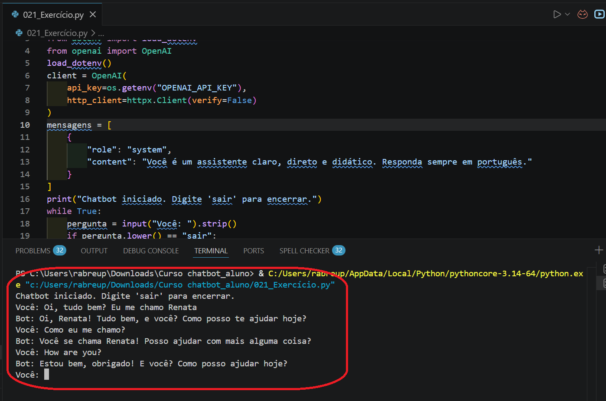
Exatamente, você identificou um problema real. Cada chamada envia o histórico completo, e quanto maior o histórico, mais tokens são consumidos. Em produção isso é gerenciado: limita-se o número de mensagens anteriores enviadas, faz-se resumo automático do histórico ou usa-se técnicas de memória seletiva. Isso é conteúdo das aulas seguintes, por enquanto o importante é entender o mecanismo.
Levanta, respira, depois a gente pratica... :-)
Agora é a sua vez. Os exercícios abaixo partem do que você acabou de ver. Se der erro na conexão, verifique primeiro se o arquivo .env está na mesma pasta do código e se a chave foi copiada corretamente.
.env com sua chave de APIpip install openai python-dotenv022_Exercicio.py baseado no 020_Exercicio.pyimport os import httpx from dotenv import load_dotenv from openai import OpenAI load_dotenv() client = OpenAI( api_key=os.getenv("OPENAI_API_KEY"), http_client=httpx.Client(verify=False) ) print("Chatbot iniciado. Digite 'sair' para encerrar.") while True: pergunta = input("Você: ").strip() if pergunta.lower() == "sair": break if not pergunta: continue resposta = client.chat.completions.create( model="gpt-4o-mini", messages=[{"role": "user", "content": pergunta}] ) print("Bot:", resposta.choices[0].message.content)
023_Exercicio.py baseado no 021_Exercicio.pyimport os import httpx from dotenv import load_dotenv from openai import OpenAI load_dotenv() client = OpenAI( api_key=os.getenv("OPENAI_API_KEY"), http_client=httpx.Client(verify=False) ) mensagens = [ { "role": "system", "content": "Você é um assistente claro, direto e didático. Responda sempre em português." } ] print("Chatbot iniciado. Digite 'sair' para encerrar.") while True: pergunta = input("Você: ").strip() if pergunta.lower() == "sair": print("Bot: Até mais!") break if not pergunta: continue mensagens.append({"role": "user", "content": pergunta}) resposta = client.chat.completions.create( model="gpt-4o-mini", messages=mensagens ) resposta_texto = resposta.choices[0].message.content mensagens.append({"role": "assistant", "content": resposta_texto}) print("Bot:", resposta_texto)
import os import httpx from dotenv import load_dotenv from openai import OpenAI load_dotenv() client = OpenAI( api_key=os.getenv("OPENAI_API_KEY"), http_client=httpx.Client(verify=False) ) mensagens = [ { "role": "system", "content": """Você é o assistente virtual de suporte técnico da TechFix. Responda apenas perguntas sobre problemas de computador, internet, impressora e celular. Se a pergunta não tiver relação com suporte técnico, diga educadamente que só pode ajudar com esse assunto. Use linguagem simples, sem termos técnicos difíceis. Responda sempre em português.""" } ] print("TechFix: Olá! Como posso ajudar com seu problema técnico?") print("(Digite 'sair' para encerrar)\n") while True: pergunta = input("Você: ").strip() if pergunta.lower() == "sair": print("TechFix: Obrigado pelo contato! Até mais 👋") break if not pergunta: continue mensagens.append({"role": "user", "content": pergunta}) resposta = client.chat.completions.create( model="gpt-4o-mini", messages=mensagens ) resposta_texto = resposta.choices[0].message.content mensagens.append({"role": "assistant", "content": resposta_texto}) print(f"TechFix: {resposta_texto}\n")
Vamos seguir com nosso aprendizado... Nos vemos lá!